먼저 생각해 보세요.
Man braucht Mehl. 여기서 man은 누구인가요?
man은 '사람들은, 누구나'라는 뜻이에요. der Mann(남자)과 다른 말이에요.
A2.1 Dazugehören · Lektion 6
요리와 식당
음성은 준비 중이에요. 듣기 단추와 받아쓰기는 음성이 올라오면 쓸 수 있어요. 그동안은 글을 읽으면서 공부해요.
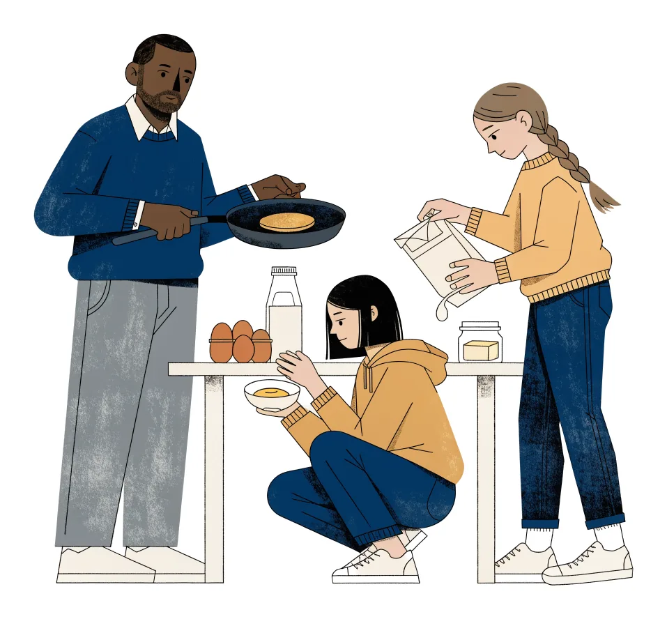
5월 둘째 일요일은 어머니날(Muttertag)이에요. 아침에는 Thomas와 Yuna, Emma가 Sabine에게 줄 팬케이크를 만들고, 저녁에는 다 같이 식당에 가요.
눌러서 들어 보세요.
먼저 생각해 보세요.
Man braucht Mehl. 여기서 man은 누구인가요?
man은 '사람들은, 누구나'라는 뜻이에요. der Mann(남자)과 다른 말이에요.
Lektion 5의 낱말 다섯 개를 다시 떠올려 보세요.
문법 man, Mengenangaben (ein Kilo, eine Flasche), Adjektive nach der, die, das, Ich hätte gern …
이 과를 마치면 요리법을 설명하고, 식당에서 주문하고 계산할 수 있어요.
어머니날 아침이에요. Sabine는 아직 자고 있어요.
들으면서 찾아보세요. 팬케이크를 만들 때 먼저 무엇을 하나요?
어머니날 저녁, 시내의 식당이에요. 오늘은 Thomas도 요리를 쉬어요.
들으면서 찾아보세요. Yuna는 무엇을 주문하나요?
두 대화를 듣고 답하세요.
Thomas와 아이들은 왜 팬케이크를 만드나요?
Wie viel Mehl braucht man?
Man braucht viel Zucker.
Nur einen Löffel Zucker. 한 숟가락만 넣어요.
Was macht man zuerst?
Was bestellt Yuna im Restaurant?
Die Familie bezahlt getrennt.
Zusammen, bitte. Thomas가 한꺼번에 계산해요.
Thomas는 모두 얼마를 냈나요?
낱말 35개예요. 낱말이나 예문 앞의 단추를 누르면 소리가 나요. 명사는 der, die, das를 색으로 구분했어요.
die Zutat, die Zutaten 재료
Wir haben alle Zutaten.재료가 다 있어요.
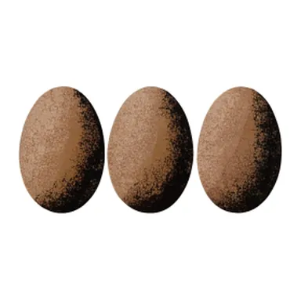
die Kartoffel, die Kartoffeln 감자
Ich esse gern Kartoffeln.나는 감자를 즐겨 먹어요.
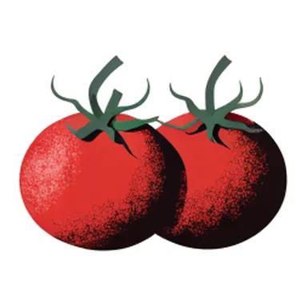
die Tomate, die Tomaten 토마토
Die Tomaten sind frisch.토마토가 신선해요.
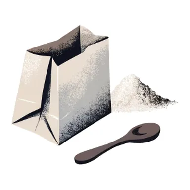
das Mehl 밀가루
Für den Kuchen braucht man Mehl.케이크에는 밀가루가 필요해요.
der Zucker 설탕
Nimmst du Zucker?설탕 넣어?
das Salz 소금
Die Suppe braucht Salz.수프에 소금이 필요해요.
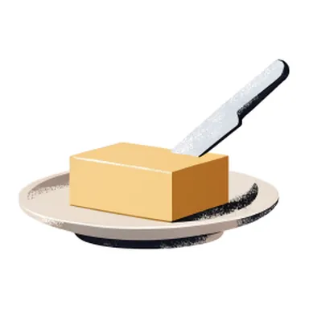
die Butter 버터
Ich esse Brot mit Butter.나는 버터 바른 빵을 먹어요.
das Öl 기름, 식용유
Man braucht ein bisschen Öl.기름이 조금 필요해요.
das Kilo, die Kilo 킬로그램
Ein Kilo Äpfel, bitte.사과 1킬로 주세요.
das Gramm 그램
Man braucht 200 Gramm Käse.치즈 200그램이 필요해요.
der Liter, die Liter 리터
Wir kaufen zwei Liter Milch.우리는 우유 2리터를 사요.
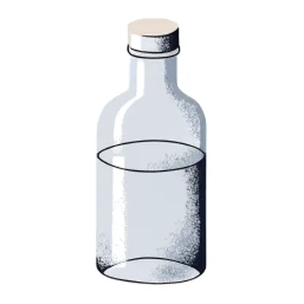
die Flasche, die Flaschen 병
Eine Flasche Wasser, bitte.물 한 병 주세요.
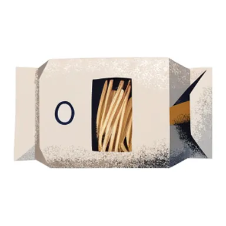
die Packung, die Packungen 팩, 봉지, 갑
Ich kaufe eine Packung Nudeln.나는 파스타 한 봉지를 사요.
das Stück, die Stücke 조각, 개
Möchtest du ein Stück Kuchen?케이크 한 조각 먹을래?
das Rezept, die Rezepte 요리법
Das Rezept ist leicht.그 요리법은 쉬워요.
brauchen, hat gebraucht 필요하다
Was brauchen wir?우리는 뭐가 필요해?
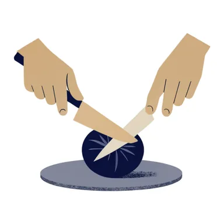
schneiden, hat geschnitten 자르다, 썰다
Ich schneide die Tomaten.나는 토마토를 썰어요.
mischen, hat gemischt 섞다
Man mischt das Mehl und die Milch.밀가루와 우유를 섞어요.
braten (du brätst, er brät) 굽다, 부치다, 볶다
Thomas brät den Fisch.Thomas는 생선을 구워요.
dazugeben, hat dazugegeben 더 넣다
Dann gibt man die Eier dazu.그다음에 달걀을 넣어요.
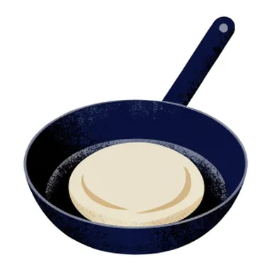
die Pfanne, die Pfannen 프라이팬
Die Pfanne ist heiß.프라이팬이 뜨거워요.
probieren, hat probiert 맛보다, 해 보다
Darf ich probieren?먹어 봐도 돼요?
schmecken, hat geschmeckt 맛이 나다, 맛있다
Die Suppe schmeckt gut.수프가 맛있어요.
das Restaurant, die Restaurants 식당
Wir essen heute im Restaurant.우리는 오늘 식당에서 먹어요.
die Speisekarte, die Speisekarten 메뉴판
Die Speisekarte, bitte.메뉴판 주세요.
bestellen, hat bestellt 주문하다
Ich möchte bestellen.주문할게요.
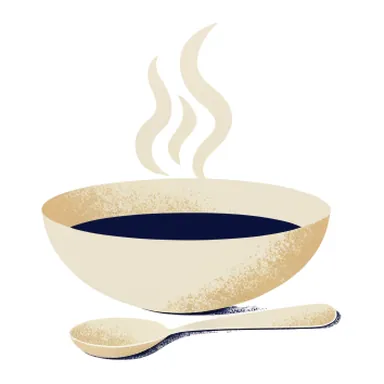
die Suppe, die Suppen 수프
Die Suppe ist heiß.수프가 뜨거워요.
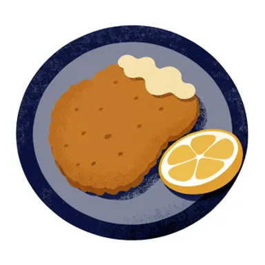
das Schnitzel, die Schnitzel 슈니첼 (얇게 펴서 튀긴 고기)
Das Schnitzel ist groß.슈니첼이 커요.
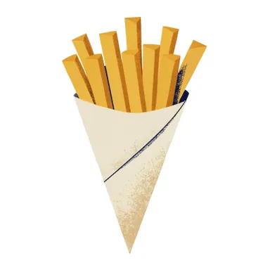
die Pommes (Pl.) 감자튀김
Ich nehme Pommes.나는 감자튀김으로 할게요.
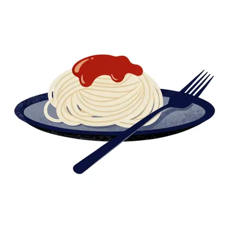
die Nudel, die Nudeln 국수, 파스타
Emma isst gern Nudeln.Emma는 파스타를 즐겨 먹어요.
die Rechnung, die Rechnungen 계산서
Die Rechnung, bitte.계산서 주세요.
bezahlen, hat bezahlt 돈을 내다, 계산하다
Ich bezahle heute.오늘은 내가 낼게.
getrennt 따로
Wir bezahlen getrennt.우리는 따로 계산해요.
das Trinkgeld 팁
Thomas gibt vier Euro Trinkgeld.Thomas는 팁을 4유로 줘요.
frisch 신선한
Der Fisch ist frisch.생선이 신선해요.
이 과의 낱말로 여덟 문제를 풀어요.
예문을 보고 답해 보세요.
man 뒤의 동사는 누구와 같은 모양인가요?
규칙
누가 하는지 중요하지 않거나 누구나 그렇게 할 때 man을 주어로 써요. 요리법, 규칙, 그 나라의 습관을 말할 때 자주 써요. 동사는 er, sie, es와 같은 모양이에요. 한국어로는 주어 없이 옮기면 자연스러워요.
| 주어 | 문장 |
|---|---|
| ich | Ich schneide die Tomaten. |
| man | Man schneidet die Tomaten. |
| man | Man brät die Kartoffeln in der Pfanne. |
| man | Hier darf man nicht essen. |
주의 man은 소문자로 쓰고 n이 하나예요. der Mann(남자)과 달라요.
예문을 보고 답해 보세요.
ein Kilo와 Kartoffeln 사이에 무엇이 있나요?
규칙
양을 나타내는 말 바로 뒤에 재료 이름을 써요. 사이에 관사나 von을 넣지 않아요. Kilo, Gramm, Liter, Stück은 수가 커져도 모양이 바뀌지 않아요. Flasche, Packung 같은 여성 명사는 복수형으로 써요.
| 하나 | 여럿 |
|---|---|
| ein Kilo Kartoffeln | zwei Kilo Kartoffeln |
| ein Liter Milch | zwei Liter Milch |
| ein Stück Kuchen | zwei Stück Kuchen |
| eine Flasche Wasser | zwei Flaschen Wasser |
| eine Packung Nudeln | drei Packungen Nudeln |
주의 Liter와 Löffel은 남성이라서 4격에서는 ein이 einen으로 바뀌어요. Man braucht einen Liter Milch und einen Löffel Zucker.
예문을 보고 답해 보세요.
der, die, das 바로 뒤의 형용사에는 1격에서 어떤 끝이 붙나요?
규칙
der, die, das 뒤의 형용사에는 1격에서 -e가 붙어요. 관사가 이미 성을 알려 주기 때문에 형용사는 -e만 붙이면 돼요. 4격에서는 남성만 den …-en으로 바뀌고, 복수는 언제나 -en이에요.
| 1격 | 4격 | |
|---|---|---|
| der Salat | der kleine Salat | den kleinen Salat |
| die Suppe | die heiße Suppe | die heiße Suppe |
| das Wasser | das kalte Wasser | das kalte Wasser |
| die Tomaten (복수) | die frischen Tomaten | die frischen Tomaten |
주의 ein 뒤에서는 형용사가 성을 알려 줬어요. ein kleiner Salat, ein kaltes Wasser. der, die, das 뒤에서는 그럴 필요가 없어서 -e예요. der kleine Salat, das kalte Wasser.
예문을 보고 답해 보세요.
Ich hätte gern … 대신 쓸 수 있는 말은 무엇인가요?
규칙
식당이나 가게에서 Ich hätte gern …이라고 하면 공손하게 주문하는 말이 돼요. Ich möchte …와 뜻이 같아요. 뒤에는 4격이 와요. 여럿이 함께 주문하면 Wir hätten gern …이라고 해요.
| 누가 | 공손한 주문 |
|---|---|
| ich | Ich hätte gern einen Salat. |
| wir | Wir hätten gern die Speisekarte. |
| 종업원이 물을 때 | Was hätten Sie gern? |
주의 hatte는 '가지고 있었다'이고 hätte는 공손하게 바라는 말이에요. a 위의 두 점을 꼭 찍어요.
Thomas가 감자 수프 만드는 법을 알려 줘요. 듣고 답하세요.
Kartoffelsuppe
Thomas Für die Kartoffelsuppe braucht man ein Kilo Kartoffeln, einen Liter Wasser und ein Stück Butter.
Thomas Zuerst schneidet man die Kartoffeln.
Thomas Dann kocht man sie zwanzig Minuten im Wasser.
Thomas Danach gibt man die Butter und ein bisschen Salz dazu.
Thomas Zur Suppe isst man Brot. Guten Appetit!
Wie viele Kartoffeln braucht man?
Was macht man zuerst?
Man kocht die Kartoffeln zehn Minuten.
Dann kocht man sie zwanzig Minuten im Wasser.
수프와 함께 무엇을 먹나요?
식당에서 하는 말이에요. 듣고 알맞은 것을 고르세요.
Sabine는 무엇을 주문하나요?
Ich hätte gern eine Flasche Wasser.
Lukas는 무엇을 먹나요?
Ich nehme das Schnitzel mit Pommes.
Elif와 친구들은 어떻게 계산하나요?
Wir möchten getrennt bezahlen.
무엇이 문제인가요?
Die Suppe ist kalt!
Yuna가 반 블로그에 올린 요리법이에요. 읽고 답하세요.
Pfannkuchen aus Korea
Zutaten: 200 Gramm Mehl, ein Ei, ein Glas Wasser, Gemüse, Salz, Öl
Zuerst schneidet man das Gemüse klein.
Dann mischt man das Mehl, das Ei und das Wasser. Man gibt das Gemüse und ein bisschen Salz dazu.
Danach brät man den Pfannkuchen mit ein bisschen Öl in der Pfanne.
Der Pfannkuchen ist fertig, wenn er braun ist.
In Korea isst man den Pfannkuchen gern, wenn es regnet. Guten Appetit!
Wie viel Mehl braucht man?
Man braucht zwei Eier.
재료에 ein Ei, 달걀 한 개라고 나와요.
Was macht man zuerst?
한국에서는 이 음식을 언제 즐겨 먹는다고 했나요?
식당 메뉴판이에요. 보고 답하세요.
Speisekarte
| Essen | Preis |
|---|---|
| Tomatensuppe | 4,50 € |
| Kleiner Salat | 5,00 € |
| Nudeln mit Tomatensoße | 9,50 € |
| Schnitzel mit Pommes | 12,90 € |
| Frischer Fisch mit Kartoffeln | 14,90 € |
| Pfannkuchen mit Eis | 5,50 € |
Was kostet die Tomatensuppe?
Was ist am teuersten?
Die Nudeln sind günstiger als das Schnitzel.
Yuna는 10유로를 가지고 있어요. 수프와 작은 샐러드를 주문하면 얼마가 남나요?
4,50유로와 5,00유로를 더하면 9,50유로예요.
man과 함께 쓰는 동사 형태를 고르세요.
Für Pfannkuchen man Mehl, Eier und Milch.
Zuerst man die Kartoffeln.
In Deutschland man viel Brot.
Hier man nicht telefonieren.
Wie man das auf Deutsch?
양을 나타내는 알맞은 말을 고르세요.
Ich kaufe ein Kartoffeln.
Wir brauchen einen Milch.
einen이 있으니 남성인 Liter예요.
Eine Wasser, bitte.
Man braucht 500 Mehl.
Möchtest du ein Kuchen?
Ich nehme zwei Nudeln.
der, die, das 뒤의 형용사 끝을 고르세요.
Der Salat kostet fünf Euro.
Ich nehme den Salat.
남성 4격 den 뒤에는 -en이에요.
Die Suppe schmeckt gut.
Das Wasser ist für mich.
Die Tomaten sind lecker.
복수는 언제나 -en이에요.
Ich hätte gern das Schnitzel.
ein 뒤인지 der, die, das 뒤인지 보고 고르세요.
Das ist ein Restaurant.
Das Restaurant ist sehr gut.
Thomas ist ein Koch.
Der Koch heißt Thomas.
Ich möchte einen Salat.
Ich möchte den Salat.
낱말을 순서대로 눌러 문장을 만드세요.
감자 1킬로가 필요해요.
먼저 토마토를 썰어요.
작은 샐러드로 할게요.
저희는 따로 계산하고 싶어요.
낱말과 뜻을 짝지으세요.
듣고 그대로 써 보세요.
음성 준비 중Man braucht einen Liter Milch. 우유 1리터가 필요해.
음성 준비 중Darf ich probieren? 먹어 봐도 돼요?
음성 준비 중Die Rechnung, bitte. 계산서 주세요.
Man braucht … ~이 필요해요.
Zuerst schneidet man … 먼저 ~을 썰어요.
Dann gibt man … dazu. 그다음에 ~을 넣어요.
Zum Schluss brät man … 마지막에 ~을 구워요.
Ich hätte gern … ~로 할게요.
Ich nehme … 저는 ~로 할게요.
Für mich …, bitte. 저는 ~ 주세요.
Wie schmeckt es? 맛이 어때요?
Es schmeckt sehr gut. 아주 맛있어요.
Die Suppe ist kalt. 수프가 식었어요.
Die Rechnung, bitte. 계산서 주세요.
Zusammen oder getrennt? 같이 계산하시나요, 따로 하시나요?
Getrennt, bitte. 따로 할게요.
Stimmt so. 거스름돈은 괜찮아요.
대화 B에서 역할을 하나 고르세요. 상대의 말은 음성으로 나오고, 내 차례에는 직접 말해요.
만들 줄 아는 음식 하나를 골라 재료와 첫 단계를 적으세요. 완성된 문장을 소리 내어 읽어 보세요.
Ich koche gern Pfannkuchen.
Man braucht 500 Gramm Mehl und einen Liter Milch.
Zuerst mischt man das Mehl und die Milch.
Mein Rezept
좋아하는 음식의 요리법을 써 보세요. 여섯 문장쯤 써요.
Mein Rezept: Reis mit Ei. Man braucht zwei Tassen Reis, zwei Eier, ein bisschen Öl und Salz. Zuerst kocht man den Reis. Dann brät man die Eier in der Pfanne. Danach gibt man den Reis und das Salz dazu. Zum Schluss mischt man alles. Das schmeckt sehr gut und geht schnell!
다 쓴 뒤에 확인해 보세요.
Ich kann ein Rezept erklären.요리법을 설명할 수 있어요.
Ich kann sagen, wie viel man braucht.재료가 얼마나 필요한지 말할 수 있어요.
Ich kann im Restaurant bestellen und bezahlen.식당에서 주문하고 계산할 수 있어요.